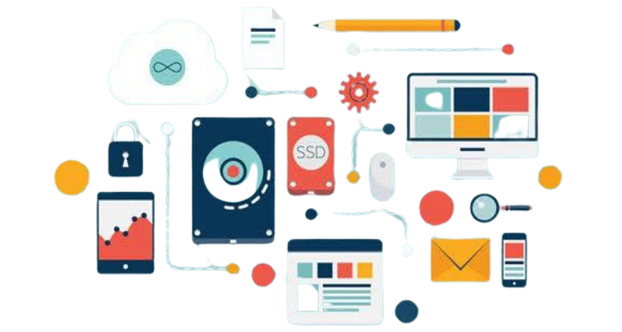

ARSITEKTUR KOMPUTER
Pengertian Arsitektur Komputer
Arsitektur Komputer merupakan ilmu yang mempelajari struktur internal suatu komputer beserta bagaimana komponen-komponennya saling berhubungan dan bekerja sama dalam menjalankan tugas-tugasnya. Komponen-Komponen Utama Arsitektur Komputer :
Tipe Arsitektur Komputer
• Von Neumann (Arsitektur Von Neumann adalah jenis arsitektur yang paling umum digunakan di sistem komputer modern)
• Harvard (Arsitektur Harvard adalah arsitektur komputer yang memiliki memori yang terpisah antara instruksi dan data)
• Pipeline (Arsitektur pipeline memungkinkan proses komputasi menjadi lebih efisien dengan mengalirkan data dan instruksi melalui pipa-prosesor)
Perkembangan Arsitektur Komputer Seiring Waktu
• Generasi Komputer (Sekitar tahun 1940-an, mesin-mesin hitung listrik pertama mulai berkembang. Kemudian pada tahun 1970-an, komputer mikro pertama diperkenalkan yang menjadi cikal bakal laptop dan komputer pribadi)
• Multicore and Parallel Processing (Pada era modern, perkembangan teruji pada arsitektur multicore dan parallel processing adalah teknologi yang memungkinkan proses komputasi untuk bekerja secara bersamaan. Dapat menghasilkan kinerja yang lebih cepat dan efektif)
• Quantum Computing (Quantum Computing sudah mulai di eksplorasi sebagai alternatif untuk teknologi percomputan pada era modern, karena mampu melakukan proses perhitungan secara paralel lebih efektif)
Central Processing Unit
Unit Pemrosesan Pusat (CPU) adalah otak dari sebuah komputer. CPU merujuk pada bagian dari sebuah komputer yang bertanggung jawab untuk menjalankan tugas komputasi. Komponen-komponen CPU meliputi ALU, CU, Register, Cache, dan bus.
